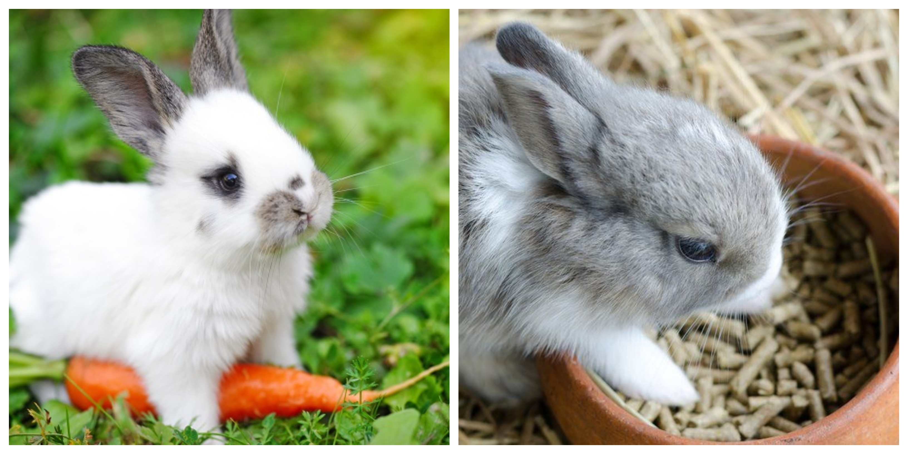

What can rabbits eat?
Rabbits are not picky creatures. You can give them a very wide variety of foods and they will eat them all. Below is a list of the best type of foods you can feed to your rabbit.
- Hay
- Pellets
- Veggies
- Beet greens
- Cabbage
- Beans
- Cauliflower
- Potatoes
- Chocolate
- Corn or corn-cob
- Cereal
- Iceberg lettuce
- Legumes
- Crackers
- Nuts
- Pasta
- Mustard greens
- Rhubarb
- Peas
- Sugar
- Seeds
- Yogurt
- Turnip greens
- Cucumber
- Bok choy
- Bell peppers
- Carrot tops
- Fennel
- Chard
- Spinach Kale
- Brussels sprouts
- Escarole
- Endive
- Cilantro
- Mint
- Parsley
- Sage
- Thyme
- Dill
- Basil
- Romaine Lettuce
- Green leaf lettuce
- Boston bibb lettuce
- Red leaf lettuce
- ArugulaLettuce
- Butter Lettuce
This is the staple of all rabbit's diet. The bottom of a rabbits diet pyramid would include long-stemmed plants. This makes up roughly 90 percent of most rabbit's diet.. Rabbits are grazing animals and require to have a limitless supply of fresh hay to munch on daily.
You should feed a rabbit little amounts of pellets. Rabbits under 5 pounds should only be fed one-eighth of a cup while rabbits bigger than 10 pounds should be fed no more than a quarter of a cup. This is because pellets are not a vital part of a rabbit's main diet. Rabbits are known to have really delicate digestion systems. So whenever you introduce new types of hay or pellets, or brand-new fruits and veggies, you need to introduce it slowly in order for the digestive system to adjust. Dwarf types and bunnies under 5 pounds need to get simply one cup of fresh veggies per day.
Vegetables and herbs are amongst a rabbits preferred foods. You can feed certain types of vegetables that you find in your ordinary grocery store., with a couple of exceptions and constraints. (There is a list of foods that you should avoid listed below.).
Foods to never feed your rabbit
Do not feed your rabbit beans, nuts, potatoes, corn, or seeds. These types of foods are hard for a rabbit to digest.
Veggies to feed rabbits on a regular basis
Herbs that are safe for your rabbit
Types of lettuce to feed your rabbit
Hay for your rabbit?
You might want to feed your rabbit lawn hays. Be sure to purchase the best hay possible and examine it for the existence of dust or mold. Dust or mold might get your rabbit ill. Alfalfa hay is not an excellent option for an adult rabbit. You can feed it to your rabbits that are less than a 12 months old, however as your rabbits get past 1 year old, you ought to be changing to turf hay. Be sure to feed turf hay if you are feeding your young rabbit any type of alfalfa pellets. Do not buy any type of pellets that have dried corn, seeds, or nuts included. This is due to the fact that those foods can be dangerous for rabbits.
Fruits to feed a rabbit
- Banana
- Apple (without the seeds)
- Berries: blueberries, strawberries, raspberries, blackberries, and cranberries
- Grapes
- Melon
- Cherries (without seeds)
- Nectarine
- Orange
- Peach
- Pear
- Pineapple
- Papaya
- Watermelon
- Plum
How to feed baby rabbits (Bunnies)
- Steam disinfect all syringes, containers, and also nipple areas based on guidelines on the decontaminating bag.
- Sit or rest on the flooring to feed the baby rabbits (bunnies), use a towel as a pillow in your lap for the bunny being fed. Bunnies will jump unexpectedly, this is why you need to be on the floor to ensure that they do not toss themselves off a table or chair. Falling from a height of only a few feet can be deadly.
- Hold the bunny horizontally in one hand, and hold the syringe or bottle in the other hand.
- Infants typically resist feeding initially, however, you should resist the temptation to force feed your bunnies. Be persistent and mild. Try to keep your bunny hydrated and fed, even versus his will, for a couple of feedings. More often than not, the infant will certainly start to sip or lap at the drops you provide. This is a good sign that you are doing something right. Please note that this might not happen on the very first feeding. Sometimes you can get lucky nd the bunny will catch on quickly.
- Do not squeeze to much formula into the bunny's mouth! Be cautious that you bunny can breathe between sips
- If the bunny grabs on to the nipple area and begins suckling, you should allow him/her including any kind of pressure on your own. Do not at any time squeeze the container or put any type of pressure on the syringe. The bunny must have the ability to suckle with sufficient force to get enough formula out of the bottle or syringe.
- If your bunny does not suckle, it is not a big deal. Most bunnies will certainly discover how to lap/sip from the tip of the nipple area. This is great as it will reduce the chance of your bunny passing out from the blockage of their airway. Attempt to hold the nipple downpointed or sideways, about the mouth, to better minimize the risk of aspiration.
- If your bunny does happen aspirate formula, it can block the respiratory tract as well as cause the bunny to lose consciousness. This should be avoided as much as possible. You should learn or practice how to do the "bunny heimlich".
- It would be great to describe the bunny heimlich in this post, but i think it would be best described by a veterinarian.
So what can rabbits eat? Rabbits can eat a variety of foods. They are not picky pets and will eat just about anything you provide. Just be sure to provide them with the nutrition they need to stay healthy.